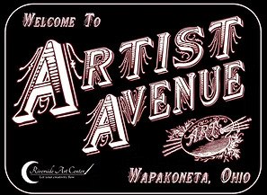
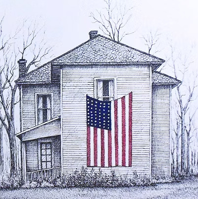
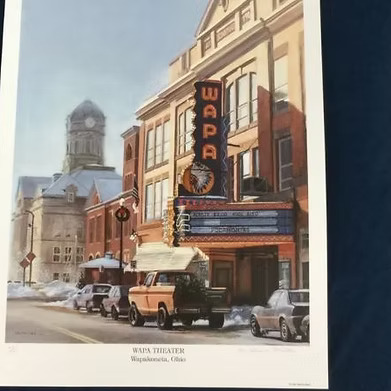
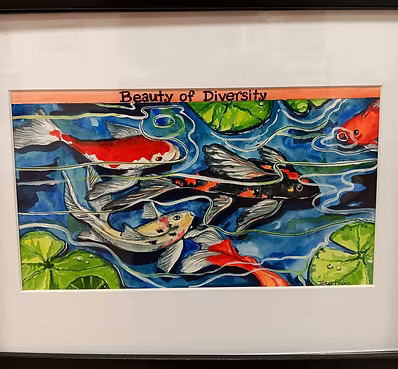

Our Artist Community
Our artist community is made up of passionate local creators, educators, and lifelong learners who bring West Central Ohio to life through watercolor, pen and ink, stained glass, oil painting, and more.
Whether they are preserving the quiet beauty of rural landscapes or exploring bold new perspectives, the members featured below represent the diverse talent and welcoming spirit that define our gallery. Take a moment to explore their stories, discover their work, and connect with the artists who make our local arts scene thrive.

Tom Lehman
ART OF CHOICE: Pen & Ink and Watercolor
I have been drawing since I was a child. I can remember my mother giving me a pencil and paper to keep me occupied in church when I was five or six years old. I have never lost the desire to create drawings, although I have gone through long periods without creating art because of work and life. When I retired, I started spending more time on my artwork.
I have usually worked in pencil or pen and ink. About six years ago, I created an ink drawing of an old door on an abandoned house. That drawing sparked an interest in old structures and objects, as well as the use of pen and ink. Since then, I have fully embraced the medium of pen and ink. My subject matter remains old barns, buildings, farms, and objects.
I am now also starting to experiment with watercolor and look forward to becoming proficient in that medium.
I look at my work through the statement on my business card:
"Saving the past in black and white and sometimes with a little color."
As for the uniqueness of my work, every artist is unique, even when studying the same subject. We all see and interpret things from our own points of view.
Learn More
Artwork by Tom Lehman
Pat Wietholter
MY ARTISTIC VISION
My work is a labor of love for the people of America, and more specifically, for the people who have taken on the responsibility of preserving the legacy of the rural American lifestyle.
It is my belief that our rural roots provide a direct pathway to the biblical foundation that is our nation's most valuable resource and treasure. To lose sight of the Christian values that our country's rural culture has historically embraced would be unthinkable.

Artwork by Pat Wietholter
Terri Lynne Blosser
ART OF CHOICE: Watercolor
I love color and culture, and I think it shows in my art. Being in my studio and creating is one of my favorite things to do. I have not been formally trained in art, but I have been drawing and painting most of my life.
I encourage people to replace the prints on their walls that they bought at a store with original artwork. It can be very affordable, supports an artist doing what they love, and adds character to your home. Plus, you never know—you could be buying a real future investment!
Learn More
Artwork by Terri Lynne Blosser